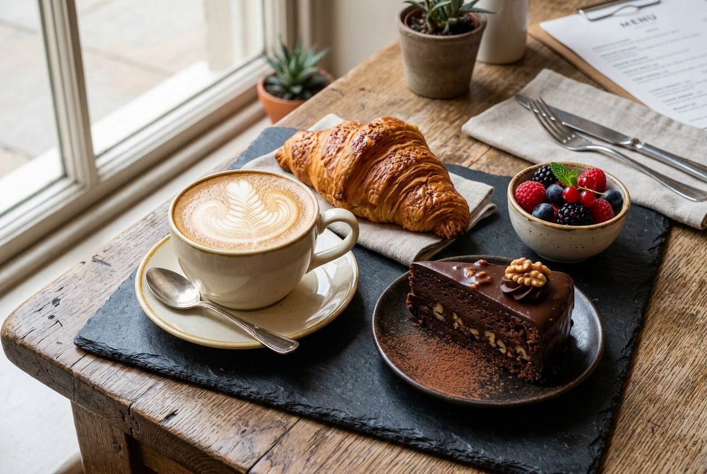

ORIGINS & BEANS
ORIGINS & BEANS
Coffee Beans 101: From Farm to Your Cup
From shade-grown estates in the Western Ghats to our roastery in the Himalayas: Arabica terroir, processing, and roasting profile.
“Stories, coffee, food, places and little things worth slowing down for.”
ORIGINS & BEANS
From shade-grown estates in the Western Ghats to our roastery in the Himalayas: Arabica terroir, processing, and roasting profile.
 MOUNTAIN LIVING
MOUNTAIN LIVING
Crisp deodar air, rushing glacial waters, and cold morning winds. Why a warm mug hits with profound depth at 2,050 meters.

“In an accelerated world, an unhurried morning in Himachal is quiet rebellion.”
Woollen throws, steaming mugs, and letting time dissolve as the morning sun clears the snow peaks of the Pir Panjal range.
 BREWING GUIDE
BREWING GUIDE
Master French press, pour-over, and moka pot with three golden rules of extraction.
 THE GABBU STORY
THE GABBU STORY
He wasn’t just a loyal German Shepherd; he was the gentle soul of the mountains. Why this entire sanctuary carries his name.
 CAFE CULTURE
CAFE CULTURE
Amber lamps, creaking timber, honest vinyl tunes, and baristas who know your name. The subtle alchemy of sanctuary.
Bakery secrets from our pastry chefs: pairing buttery laminated croissants with fruity pour-overs and dark roasts with rich fudge tortes.

Occasional dispatches from our Manali coffee bar: new single-origin micro-lots, bakery recipes, and quiet stories from the Himalayas. No spam, ever.